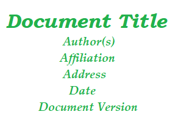
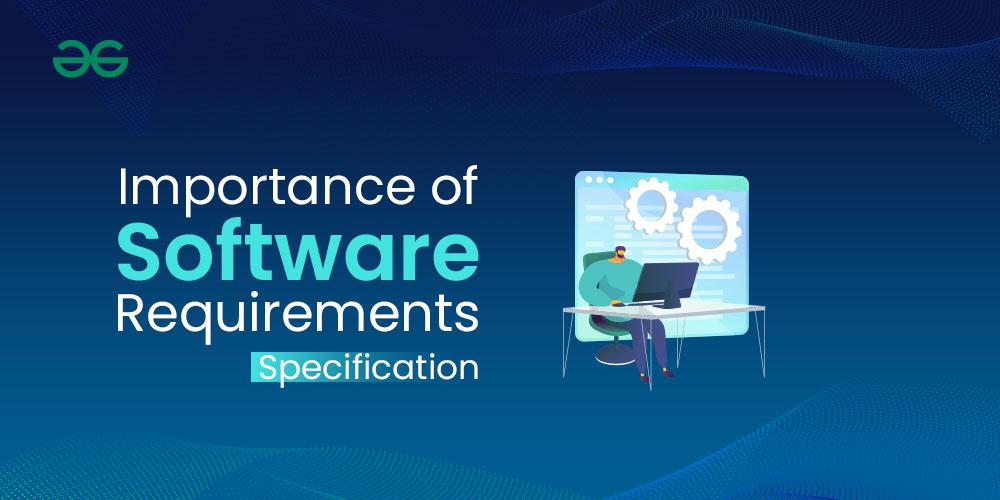

4.14 Requirements Specifications / SRS Document
A Software Requirements Specification (SRS) is a complete specification and description of the requirements of the software that need to be fulfilled for the successful development of the software system. These requirements can be functional as well as non-functional depending upon the type of requirement.
SRS is a document that describes what the features of the software will be and what its behaviour will be — that is, how it will perform. It is like the layout of the software which the user can review to see whether it is made according to their needs. The advantage of SRS is that it takes less time and effort for developers to develop software when requirements are clearly documented upfront.
- SRS is a kind of agreement between the customer and the company, containing complete information about the requirements desired by the customer and the product to be made by the company.
- Interaction between customers and contractors is necessary to fully understand customer needs before the SRS is developed.
- The SRS may include changes and modifications needed to increase product quality and satisfy customer demand.
- SRS serves as the primary deliverable of the requirements specification phase in the RE process (§4.2) and as the baseline for design, testing, and acceptance.

Main sections of an SRS document
To form a good SRS, the following sections should be considered and included:
1. Introduction
- Purpose of this document: The main aim of why this document is necessary and what its purpose is explained and described.
- Scope of this document: The overall working and main objective of the document and what value it will provide to the customer is described. It also includes a description of development cost and time required.
- Overview: A summary or overall review of the product is provided.
- Additional standard subsections include definitions and acronyms, references, and an overview of the remainder of the document.
2. General description
- This section describes the general functions of the product, including the objective of the user, user characteristics, features, and benefits.
- It explains why the product is important and describes features of the user community.
- It also covers product perspective (how the system fits into the larger environment), general constraints, and assumptions or dependencies.
3. Functional requirements
- This section fully explains the possible outcomes of the software system, including effects due to operation of the program.
- All functional requirements — which may include calculations, data processing, etc. — are placed in ranked order.
- Functional requirements specify the expected behaviour of the system — which outputs should be produced from the given inputs.
- They describe the relationship between the input and output of the system.
- For each functional requirement, a detailed description of all data inputs and their source, the units of measure, and the range of valid inputs must be specified.
- Each requirement should be uniquely identified for traceability (see §4.9).
Functionally, the system can be viewed as performing a group of high-level functions Fi, where each function Fi is a transformation of a set of input data Ii to a corresponding set of output data Oi.
4. Interface requirements
- This section describes software interfaces — how software programs communicate with each other or with users, either in the form of language, code, or messages.
- Examples include shared memory, data streams, user interfaces, hardware interfaces, software interfaces (APIs), and communication interfaces.
5. Performance requirements
- This section explains how a software system performs desired functions under specific conditions.
- It specifies required time, required memory, maximum error rate, throughput, response time, capacity, and availability targets.
- All requirements relating to the performance characteristics of the system must be clearly specified.
- Static performance requirements are those that do not impose constraints on the execution characteristics of the system.
- Dynamic performance requirements specify constraints on the execution behaviour of the system.
6. Design constraints
- This section specifies limitations or restrictions for the design team — for example, use of a particular algorithm, or hardware and software limitations.
- Factors in the client's environment that may restrict design choices include standards that must be followed, resource limits, operating environment, reliability and security requirements, and organisational policies.
- An SRS should identify and specify all such constraints.
7. Non-functional attributes
- This section explains non-functional attributes required by the software system for better performance.
- Examples include security, portability, reliability, reusability, application compatibility, data integrity, scalability, maintainability, and usability.
- Non-functional necessities accommodate characteristics of the system that may not be expressed as functions — such as maintainability, mobility, and usability of the system.
- They may also include reliability issues, accuracy of results, human-computer interface issues, and constraints on system implementation.
8. Preliminary schedule and budget
- This section explains the initial version of the project plan, including overall time duration and overall cost required for development of the project.
- It links directly to project planning in Topic 3 §3.2 and cost estimation in §3.5.
9. Appendices
- Additional information such as references from where information was gathered, definitions of specific terms, acronyms, and abbreviations are given and explained.
- Supporting material may include sample input/output, glossary, analysis models (DFD, ERD), decision tables, and traceability matrices.
10. Goals of implementation
- This section documents general suggestions relating to development that guide trade-offs among design goals.
- It may document future revisions to system functionalities, new devices to be supported in the future, and reusability issues.
- These are things developers should keep in mind during development so the system can meet aspects not immediately required but important for long-term evolution.
Uses of the SRS document
- The development team requires it for developing the product according to customer needs.
- Test plans are generated by the testing group based on the described external behaviour.
- Maintenance and support staff need it to understand what the software product is supposed to do.
- The project manager bases plans and estimates of schedule, effort, and resources on it.
- The customer relies on it to know what product they can expect.
- It serves as a contract between developer and customer.
- It is used for documentation purposes throughout the project lifecycle.
Importance of the SRS document

- Clarity and understanding: The SRS provides a common communication channel between stakeholders so everyone agrees on what the project aims at. It reduces ambiguity and the risk of misunderstandings by clearly defining requirements.
- Basis for project planning: The SRS provides the information project managers need to define realistic timelines, assign appropriate resources, and set milestones. It allows teams to accurately estimate costs and schedules.
- Guidance for development teams: The SRS guides developers in understanding functional specifications and how the software will be designed. It offers an overview of system architecture, user interfaces, and data structures.
- Facilitates testing and quality assurance: QA and testing teams use the SRS to design test cases that verify the software conforms to what was specified, making testing more systematic.
- Change management: The SRS provides a baseline against which any proposed changes can be judged, ensuring changes are recorded, approved, and properly implemented without scope creep (see §4.7).
- Client and stakeholder satisfaction: The SRS acts as a contract between the development team and the client. When the final product meets what was documented, client satisfaction and trust increase.
- Risk mitigation: The SRS helps in risk assessment by specifying dependencies, constraints, and potential risks early in the software development life cycle.
- Enhanced collaboration: The SRS fosters team spirit and a single shared vision among cross-functional teams, making the development process more integrated and efficient.
Characteristics of a good SRS
A good SRS document should possess the following characteristics (full detail in §4.16):
- Complete: All software requirements should be mentioned in the SRS.
- Correct: Requirements should be according to the needs of the customer.
- Clear: Requirements should be clearly declared and easy to understand.
- Accurate: If the SRS is not accurate, the software cannot be developed correctly.
- Consistent: There should be no contradiction between any two requirements from beginning to end.
- Verifiable: Requirements should be verifiable by experts and testers.
- Modifiable: All requirements should be modifiable when the structure of the SRS is well-balanced.
- Traceable: Each requirement should be uniquely identified so it can be traced to design and test cases.
- Testable: Requirements should be capable of being tested in some way.
- Unambiguous: Each requirement should have only one interpretation.
SRS audience
- Customers and users review the SRS to confirm the system will meet their needs.
- Project managers use it for planning, estimation, and change control.
- Designers and developers implement the specified behaviour.
- Testers derive test cases from each requirement for verification and acceptance testing.
- Maintenance engineers refer to the SRS when modifying the system after delivery.
SRS and the SDLC
- The approved SRS marks the end of the requirements phase in the SDLC and the input to the design phase.
- Changes after approval require formal change control through requirements management (see §4.7).
- Ignoring the importance of a correct SRS can mean project failure, increased development costs, and dissatisfied stakeholders.
- Developing a powerful SRS is the first step on the road to success for any software development project.
Two SRS documents (customer vs developer)
- In practice, two SRS documents are sometimes written: the first SRS is written by the customer to define their expectations of the user, and the second SRS is written by the developer to serve as a contract document between customer and developer.
- Further guidance on writing a good SRS is covered in §4.15, and IEEE standard structure in §4.17.
Q: What is a Software Requirements Specification (SRS)? Describe its main sections, uses, importance, and characteristics of a good SRS.
Model answer points:
- Define SRS as complete description of software requirements (functional + non-functional); agreement/contract between customer and developer; layout of software behaviour.
- Sections: Introduction (purpose, scope, overview) → General description → Functional (input/output, ranked) → Interface → Performance (static/dynamic) → Design constraints → Non-functional attributes → Schedule/budget → Appendices → Goals of implementation.
- Uses: development guide, test plan basis, maintenance reference, PM planning, customer expectation, contract, documentation.
- Importance: clarity, project planning, dev guidance, testing/QA, change management, client satisfaction, risk mitigation, collaboration.
- Characteristics: complete, correct, clear, accurate, consistent, verifiable, modifiable, traceable, testable, unambiguous.
- State SRS as requirements phase output and design phase input; changes need formal control.
- Mention two SRS concept: customer SRS (expectations) and developer SRS (contract).